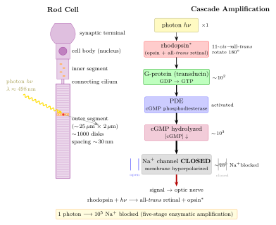

人眼真能看到一个光子吗?
夜晚走进一间完全关灯的屋子, 最初什么都看不见。过几分钟, 窗帘的一条缝、手机屏残留的一点余辉, 开始在视野里浮现。再过几分钟, 连墙上的挂钟也能辨出大致轮廓——这就是"暗适应"。上一节我们看到光合作用能把单个光子的能量锁进叶绿素的激发态; 现在反过来问: 那些同样稀疏的光子, 到达人的视网膜, 能不能被"报告"给大脑?
这个问题不是修辞。光既然是量子化的, 就存在一个最小包裹——一个光子的能量 $h\nu$。如果人眼像一台好的单光子探测器, 它就该能在统计意义上区分"来了一个"和"一个都没来"; 如果不能, 那是因为噪声太大, 还是因为信号被吞在神经层的阈值里? 整个二十世纪的视觉科学, 几乎都在为这个问题做最小化的实验。
一、视杆、视锥与暗适应的分工
人类视网膜上铺着两类感光细胞。视锥细胞 (cone) 约 $6 \times 10^6$ 个, 密集挤在 fovea (中央凹) 的那一小块地方, 负责高分辨率和彩色视觉; 视杆细胞 (rod) 约 $1.2 \times 10^8$ 个, 分布在视网膜周边, 专司暗光。两者在敏感度上相差约两个数量级: 视杆的敏感度大约是视锥的 $100$ 倍。这解释了一个日常现象——夜里想看清暗淡的星, 反而不能正视它, 而要让星光落在视野的侧面, 那里才是视杆的地盘。
视杆细胞的外节 (outer segment) 是一根直径约 $2\ \mu\mathrm{m}$、长约 $25\ \mu\mathrm{m}$ 的圆柱, 里面像硬币一样摞着约 $1000$ 张膜盘 (disks), 盘间距 $\sim 30\ \mathrm{nm}$。每张膜盘的脂双层里嵌着数万个感光分子, 也就是视紫红质 (rhodopsin): 一个七次跨膜的蛋白——视蛋白 (opsin)——怀里抱着一小块被称作 11-顺视黄醛 (11-cis retinal) 的小分子。整支视杆外节相当于一只光学"饼干筒", 把光学路径里所有可能被吸收的位点压到最高密度, 几何上保证一个穿过外节的光子有足够多次机会遇到 rhodopsin。
rhodopsin 的吸收峰在 $498\ \mathrm{nm}$ (蓝绿), 恰好对应黄昏和夜空里最丰富的波段——这不是巧合, 而是演化对"在什么光下要活下去"这一问题长期优化的结果。从色觉角度看, 暗视觉本身是单色的: 一切都经由同一种色素编码, 所以夜里我们只看得出深浅, 看不出颜色。Purkinje 早在 19 世纪就观察到: 黄昏时分红花变暗、蓝花反而显亮——这就是视杆从视锥手里接班的瞬间。
二、一个光子的开关: 视黄醛的异构化与 G 蛋白级联
视觉最核心的一步, 发生在 11-顺视黄醛这块小分子里。它的主链上有一串共轭双键, 在第 11 个碳处有一个顺式 (cis) 的折角。一个 $498\ \mathrm{nm}$ 附近的光子被吸收后, 电子跃迁到激发态, 沿激发态势能面滑下来, 使双键的扭转角旋转 $180^\circ$, 11 位从顺式变成反式 (trans), 整条碳链从弯变直:
$$ \text{rhodopsin} + h\nu \;\longrightarrow\; \text{all-}\textit{trans}\ \text{retinal} + \text{opsin}^{*} \tag{1} $$
视黄醛从顺变反, 是一次纯粹的光化学形变, 发生在飞秒量级 ($\sim 200\ \mathrm{fs}$), 是已知生物化学中最快的光反应之一。形变强迫怀抱它的视蛋白重新整理构象, 蛋白的几个内螺旋发生相对位移, 使一块原本藏起来的胞内面暴露出来。这个激活态的视蛋白 $\mathrm{opsin}^{*}$ (习惯叫 meta-II), 就是一切后续事件的真正起点。
接下来是一串"放大链条"。$\mathrm{opsin}^{*}$ 停留的短短几百毫秒里, 会像酶一样催化数百个 G 蛋白——transducin——由不活跃的 GDP 形式换成活跃的 GTP 形式; 活跃的 transducin 再结合并激活 cGMP 磷酸二酯酶 (PDE), PDE 以每秒数千分子的速率水解胞内的 cGMP。而视杆外节的 Na$^+$ 通道是 cGMP 直接门控的: cGMP 浓度高时开着, 浓度掉下来时立刻关闭。Na$^+$ 内流被切断, 膜电位超极化, 信号就这样沿视杆轴突送出视网膜。
把这条链粗略地写一行:
$$ 1\ \text{光子} \;\to\; 1\ \mathrm{opsin}^{*} \;\to\; \sim\!10^{2}\ \text{transducin} \;\to\; \sim\!10^{3}\ \mathrm{cGMP\ 水解} \;\to\; \sim\!10^{5}\ \mathrm{Na}^{+}\ \text{被阻挡} \tag{2} $$
这是一个跨五到六个数量级的酶促放大器。一个光子在一张膜盘上落下, 最终在膜上产生几 pA 的电流变化——已经是常规电生理手段能分辨的信号。没有这条链, 单光子事件会淹没在热噪声下; 有了它, 视觉系统才有可能触及量子极限。

三、Hecht-Shlaer-Pirenne 1942: 心理物理学的闪烁阈值
关于"人到底能看到多少光子"这一问题, 最经典的实验是 Hecht、Shlaer、Pirenne 三人于 1942 年在哥伦比亚完成的心理物理学测量。他们的思路朴素而漂亮: 让一个暗适应超过 $30$ 分钟的观察者, 正对视野边缘某一固定角度 (那里视杆最密) 看一系列极短 ($\sim 1\ \mathrm{ms}$)、极弱、波长 $\sim 510\ \mathrm{nm}$ 的蓝绿色光斑, 每次问他"看见没有?", 再把回答"看见"的比例, 画成入射光强的函数——响应曲线从 $0$ 缓慢上升到 $1$, 这条曲线的斜率和位置, 原则上就编码了眼睛的阈值。
关键在于: 入射到角膜的光子数太少时, 实际被视杆吸收的光子数服从泊松分布。如果眼睛的真实"看见"条件是"至少 $k$ 个视黄醛被成功异构化", 那么观察者报告"看见"的概率就是
$$ P(\text{看见}\,|\,\bar n) \;=\; \sum_{m=k}^{\infty} \frac{\bar n^{m}\,e^{-\bar n}}{m!} \tag{3} $$
其中 $\bar n$ 是平均被吸收的光子数。Hecht 他们把数据拟合到这个带阈值 $k$ 的 Poisson 曲线, 得到:
- "看见阈值" $k$ 落在 $5$ 到 $7$ 个被吸收的光子之间;
- 从到达角膜到被视黄醛吸收的量子效率大约在 $5\%$-$10\%$; 其中的损失主要发生在角膜、晶状体、玻璃体的反射与吸收, 以及未被外节捕获而"漏过去"的光子。
这就是心理物理学第一次明确给出的数字: 人眼的心理阈值, 小到只要五六个光子击中视网膜。那一瞬间, 量子世界和我们的感官经验直接对上了话。这个数字至今没有被本质修正。
不过 Hecht 实验回答的不是"一个光子能不能被看见", 而是"几个光子足够被报告"。"一个"这个极限, 需要另一类实验去触碰——既然自然光源无法精准发射单个光子, 就得借助单个视杆的电生理, 或者真正的单光子量子光源。
四、Baylor 1979 与 Tinsley 2016: 单光子事件的直接观测
1979 年, Baylor、Lamb 和 Yau 做了一件在今天看仍然漂亮的实验。他们从蟾蜍视网膜上切下单根视杆细胞, 把外节吸进一支微吸管 (suction pipette) 里, 这样视杆内外的离子电流必须从吸管口流过, 形成一个可以直接测量的光电流通道。然后, 他们用极弱的光闪击一次, 给不到一个光子的平均水平, 观测记录。记录里出现了一个个离散的、幅度几乎相同的小台阶——后来被命名为 "quantum bumps": 每个台阶就是一次光子吸收事件, 而台阶之间的间隔服从泊松分布。幅度的一致性是决定性的——它证明了视杆是一个"数光子"的装置, 每个光子触发一个几乎标准化的电信号。
从 Baylor 的 quantum bumps 可以直接读出级联放大的硬件参数: 单光子事件的峰值电流变化约 $0.5$-$1\ \mathrm{pA}$, 持续 $\sim 1\ \mathrm{s}$。换算成电荷大约等效于 $\sim 10^{6}$ 个离子的通量阻断, 与公式 (2) 的级联估算一致在 $10^5$-$10^6$ 个 Na$^+$ 这个量级上。这也就意味着: 单一视杆已经能"看到"一个光子; 真正的问题是, 大脑是否能把这个信号从整片视网膜的背景噪声里抢救出来。
要让这条链条接到"人能不能报告看见", 需要再往前走一步。2016 年 Tinsley、Vaziri 等人 (Nature Communications) 用了一个参量下转换 (SPDC) 的单光子源: 一束光子一次准确地只射出一个, 并且有一个并发光子作为触发信号, 只有在触发确认一个光子进入人眼的条件下, 才记录观察者的回答。经过几万次试验的统计, 在被刺激的条件下, 人类观察者报告"看见"的比例, 比随机猜测的基线略高, 且这个差别在统计上是显著的。
这也许是目前最干净的答案: 在统计意义上, 人真的能看到一个光子。幅度小到必须靠大样本才能从噪声里显形, 但它在那里——量子力学的最小能量包裹, 确实能在人类意识里引出一丝回响。
五、极限的边界: 暗计数、三杆一致性与饱和
单个视杆能不能察觉一个光子, 还受制于一个绕不开的对手——暗计数。即使没有任何光, 视黄醛也会以极低的速率自发地、热涨落地从 11-顺异构化为全反。测量给出的速率约为:
$$ R_{\text{dark}} \;\approx\; 0.01\ \text{事件}/\mathrm{rod}/\mathrm{s} \tag{4} $$
单根视杆每百秒左右就会"假报"一次光子。对视觉系统来说, 这是内禀的量子力学热噪声——retinal 的势垒就摆在那儿, 温度给它一个 Boltzmann 因子。整个视网膜有 $1.2\times 10^{8}$ 根视杆, 如果每根都独立把"看见"的信号上报, 大脑每秒会收到 $\sim 10^{6}$ 次假警报——视野会完全被雪花噪声淹没, 什么信号都传不上去。
演化的对策是: 视网膜在神经元层面上做"一致性检测"。粗略地说, 只有当若干相邻视杆在短时窗内同时发出"看见"信号时, 下游的神经节细胞才真正把这一事件报告给大脑。假设要求 $N$ 根邻杆在 $\tau$ 秒内一致触发, 则单位时间的虚警率大约按 $R_{\text{dark}}^{N}\,\tau^{\,N-1}$ 的形式压下去——只要 $N\approx 3$、$\tau \sim 0.1\ \mathrm{s}$, 视野里每秒的假警报就从 $10^{6}$ 降到十次以下, 而真实光子事件由于空间相关 (多个邻近视杆都收到邻近光路的光子) 几乎不受影响。这就是经典的相关探测: 用冗余与几何约束换信噪比。
把数字摆到一起, 可以看到一张极限表:
- Hecht 心理阈值: $\sim 5$-$7$ 光子/闪 (暗适应观察者);
- Tinsley 单光子探测: 单个光子, 比基线高但接近噪声上限;
- 视杆饱和: 约 $100$ 光子/秒/杆以上时响应不再线性——白天强光里视杆"泡"在光子里近乎完全关闭, 视觉切到视锥;
- 动态范围: 从单光子到正午太阳下的 $\sim 10^{18}$ 光子/秒/视网膜, 视觉系统用视杆-视锥切换 + 瞳孔调节 + 神经增益, 跨越 $\sim 14$ 个数量级。
最极端的对比是 Hecht 阈值与暗计数之间的"信噪比权衡": $5$ 光子的信号需要在 $\sim 500$ 根视杆 (Hecht 所用的刺激覆盖范围) 同时没有发生暗事件的前提下浮出水面, 这就要求视觉系统在神经层面有极强的空间-时间积分能力。量子极限并非"一个光子就足够", 而是"一个光子足以, 条件是你付得起噪声抑制的代价"。
六、历史尾声与哲学: 单光子感知的意义
从 Hecht-Shlaer-Pirenne 1942 的心理物理实验, 到 Baylor-Lamb-Yau 1979 的电生理 quantum bumps, 到 Rieke 和 Baylor 1998 年那篇现在仍被反复引用的综述 (系统论证视觉在量子极限的极限处), 再到 Tinsley-Vaziri 2016 用真正的单光子源完成"闭环", 这条研究链条延续了近八十年, 每一步都把对"看见"的定义收紧一次。Hecht 本人在 1942 年论文末尾就说过——以当时的术语——"人眼接近理想的量子探测器"; 这个猜想在今天被逐字证实。
为什么自然演化会把感光推到单光子极限? 一个功利的答案: 对捕食和逃生来说, 比同类早 $1$ 秒看见一丝光是生死之差。一个更深的答案: 当一条感知通路能探测到"能量最小单元"时, 它就不再是一条化学路径, 而是一台在约束条件下取得信息理论最优的量子测量装置——这一特性今天正被量子生物学 (quantum biology) 用作主要案例之一, 与同样被怀疑"处在量子极限"的光合作用 (上一节) 、以及磁场导航的自由基对机制并列。
小结
回到这本书的主线——"光是什么?" 本节给出一个属于生命的答案: 光, 在眼睛看来, 是一枚一枚可计数的包裹。$498\ \mathrm{nm}$ 的一个光子, 足以扭转一块视黄醛、激活一个视蛋白、串起从 transducin 到 Na$^+$ 通道的 $10^5$ 倍放大链, 在视杆膜上写下一个 pA 级的台阶——然后被视网膜的空间相关机制和神经节的积分运算仔细地从暗计数海洋里打捞出来, 传给大脑, 在意识里化成"好像看见了一下"。Hecht 在 1942 年把阈值压到 $5$-$7$ 个光子, Baylor 在 1979 年看见单个光子的电台阶, Tinsley 在 2016 年证明统计上人能报告单光子——八十年的研究告诉我们, 视觉系统是离量子极限最近的一台生物仪器。下一节, 我们把同一把"量子尺"拿到另一个场景: 蜜蜂为什么能看到紫外? 色觉的边界, 比我们想象的更宽。
▲